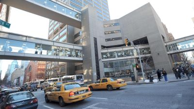

Michael Calle

Contact Information
michaelcalle14@gmail.com | 631-402-7416
Education
- Hunter College, City University of New York Fall 2020 - Present
- Bachelor’s in Arts in Computer Science expected Fall 2024
- Relevant Coursework: Software Analysis & Design I, II, and III (including Data Structures & Algorithms), Computer
- Architecture I and II, Discrete Mathematics, Statistics I, Computer Theory I, Big Data, Graph Theory, Game Engines
Skills
Languages: C++, C, Java, Python C#, MIPS Assembly Language, Javascript, HTML, CSS, Flask, Jinja, MySQL
3D and 2D Software: Blender 3D, Unity 3D, Google Sketchup, GIMP Image Manipulator
Workflows / Tools: Git / GitHub, Windows Subsystem for Linux (WSL), Linux, Docker, DigitalOcean, Nginx
Experience
- Major League Hacking Fellowship, MLH PE Fellow Summer 2022 (Meta) Summer 2022 - Summer 2022
- Completed 12 weeks of structured curriculum-based learning covering core Production Engineering topics,
supplemented with events / workshops hosted by industry experts
- Created an open-source personal portfolio website template using Python, Flask, Jinja, MySQL, Nginx
- Automated testing and deployment workflows using CI/CD
- Set up system and container monitoring, alerting, and visualization using Prometheus and Grafana
- Worked closely with mentors from Meta as they oversaw our projects and development.
- Leadership Development Intern, RippleMatch Fall 2021 - Winter 2021
- Leveraged various growth strategies and tools including social media, email marketing, presentations, and peer and
faculty member networking to grow the user base and awareness of RippleMatch on campus
- Strategically assessed growth and performance metrics to improve, change and/or help design new growth strategies
- Bridge to Enter Advanced Mathematics (BEAM) Summer 2015 - Summer 2020
- Studied advanced mathematics at a higher level through a three week overnight stay at Bard College by engaging in
multiple competitions.
- Attended STEM summer, after-school, and weekend classes in the following years at NYU.
- Yleana Leadership Foundation, Colgate University Summer 2019
- 3-week entrepreneurship program. Led a team and made a pitch approved practical by active experienced entrepreneurs.
- AllStarCode, Goldman Sachs Summer 2018
- Furthered skills in HTML, CSS, Javascript, Google’s Firebase API, and GitHub via a six week summer intensive in
web development at Goldman Sachs by working closely with experienced web developers as mentors.
Other
Copyright 2024